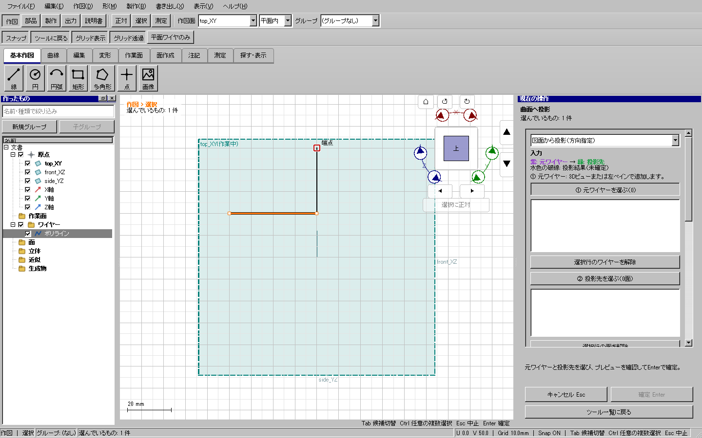

2026-10-25 / WP08 / base 4fee30301。幾何コアの公開API・保存スキーマは変更しない。
| 問題 | 原因と対応 | 検証 |
|---|---|---|
| ツール中に別の線を削除するため道具を切り替える必要 | 共通の「選択・削除」ボタンを追加。元の役割対象と編集中の点・数値を保存し、編集用選択を分離する。Ctrlクリックでも開始。Esc・ボタン・役割選択開始で復帰。 | 実マウス/キーイベントで面作成、押し出し、厚み、投影、曲面押し出し、オフセット、寸法、画像の選択/削除/Undo/Redo/復帰。文字入力欄のDeleteは維持。 |
| 選択行のチェックが効かない・小さな手ぶれで大量選択 | 押下時に切替えて解放をQtへ渡し、以前の押下状態で再処理されていた。チェックは安定した行IDで押下から解放まで所有し、同じチェック内で解放した時に一度だけ切替。 | 修正前に再現失敗、修正後に同じ操作成功。個別/カテゴリ/グループ、折畳み、Undo、ドラッグ選択も確認。 |
| 投影途中の無関係な削除後も全入力の再選択が必要 | 文書リビジョンだけで一律拒否していた。元線の全定義と選択フェイスのnative形状が変わらないことを照合できた場合に限り継続し、古い下見は再利用しない。 | 入力済み線と面を残し、別の線を削除→復帰→投影→Undo後も投影可能。 |
| 巻付け曲線・平面部材の型紙が細分化 | 巻付けの内部補間区間を元線区間内で結合。平面部材は元の円弧/円/Bezier/splineを外周・穴・折り線・切れ目へ戻して剛体変換する。無変形の接続線も元曲線を保持。 | 円柱上の長い曲線、距離・長さ・閉鎖、傾斜/裏向き平面と穴、0/37/100%組立姿勢、複数の標本公差、保存再読込。 |
| 出力曲線の変形 | DXFのuniform splineにclampedノットを付けていた。SVG/DXFの円弧は法線符号を無視、PDFは負掃引の接線を二重反転。各writerを修正。 | 書き出したノット・制御点から独立de Boor再構築。法線±Z×掃引±90度の向き・補弧・PDF接線を検査。 |
| 現在ファイルが分からない | タイトルへ現在のファイル名。新規/保存先変更/読込成功/読込失敗を区別。 | 日本語と空白を含むパスで実保存/新規/開き直し/失敗。 |

Qtの実ウィジェットにマウス・キーイベントを送り撮影した画面。人が手で全項目を操作したという意味ではない。配布版の通常起動は別途確認する。
重点UI 65ケース中64件成功。残るフェイス選択試験は旧配布版でも同じナビゲータ上のクリックとなって失敗したため、試験画面を広げて実際に見える対象をクリックするよう修正し、同ケースは成功。追加の測定を含む11ケースは成功。Windows全体ゲートの再検証中。
全体実行r2では195試験中193成功。失敗した本体UIと配布版UIは、ともに589ケース中同じHP-ME-03の1件だった。測定のCtrl選び足しを新しい任意選択が横取りしていたため、測定中のCtrlは既存の測定選択へ渡すよう修正。修正前・後の報告を残し、r3で全体を再実行する。
最初の重点実行でCtrl選択の独自eventFilter、空Deleteの数値編集、タイトル試験のパス作成を検出し修正。短い構造検査で関数/ファイル行数と直接include不足を検出し、独立した補助型へ分離した。失敗ログもout/usability-20261025とout/verification/usability-preflight-20261025に保全。
曲面の穴・深さ違いで切れる区間、直線と曲線の境界、近似板の実際の折り目は結合しない。折り目を丸めて工作形状を変えることはしない。巻付けの写像誤差は標本評価であり、全区間の数学的保証とは表示しない。